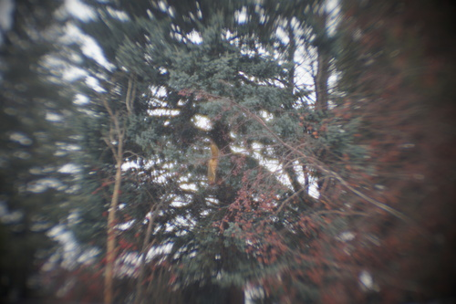

okay now that we have that unrealistic plan out of the way...
i already have the money to do this but i'm going to wait for hina to arrive and think about it some more. my mom might be right that it makes dolls more special when they arrive one at a time. unoalchemy has been on hiatus since like 2019 so i dont think theyre coming back and i'm starting to doubt the global shipping situation will ever return to normal. I am not mentally prepared for the shipping fee yet. I just know it's going to end up being like $150. i really love my lusis so much and gentaro araki really does make the most beautiful bodies

im super on the fence about this. i dont consider myself "bonded" to this doll at all. he could disappear tomorrow and i'd probably not notice. i dont love him. my biggest feelings about him are the guilt i have for not buying him a body. alternatively, i could keep leaving him in the box or sell him. I really don't need the money right now so there's not much of a reason to get rid of him.
Or... I could buy Liam a new body and leave miho on this body. it's funny how the colors of WS and NS are starting to converge. my WS ryu and NS miho are almost close to the same color! this body is not a good match but at this point i'm not sure I will ever find a good match. i just dont love this doll enough to put the effort in.
pretty much all of my dolls need new eyes. i could easily buy resin eyes, but i dont want to have to replace them in a few years.

I'm seeking out a hope chest or a short set of drawers. this will cost as much as a doll if i buy one new or have one made. hopefully one will show up in a thrift store for less than $200
theres no point in spending thousands of dollars on dolls if they dont make you happy!!!! also I'm going to change my mind tomorrow about all of these plans but thanks for reading anyway!
also, what's not fun is waiting 9 months for a doll. please slap me if i ever want to do a volks preorder again because this is awful
Here's a shot with the tele filter on! it's nuts and i had to focus at infinity to get this! its sooo bad and i still couldnt get anything in focus. also it makes me dizzy